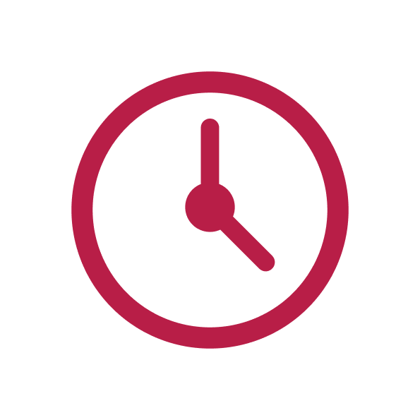

Longevity
“Best thought of as a translation of the coating’s film thickness, which is largely a function of the coating’s activity or ability to build molecular layers of SiO2. If there is more material to wear away then it will last longer, everything else remaining equal.”